Un chapitre de rappel de biochimie générale. Le prof ne le donne pas pour que tu ré-apprennes chaque enzyme : il veut que tu saches raconter et dessiner le grand schéma « période alimentaire vs période de jeûne », sans un seul nom d'enzyme. « Je n'ai pas donné le nom d'une seule enzyme » : tout le reste du cours (hormones, diabète, athérosclérose) s'explique à partir de ce schéma. Les voies détaillées (glycolyse, Krebs, pentoses) sont là pour comprendre ; on ne te demandera pas de les redessiner.
Objectif métabolique sur 24 h : garder une glycémie suffisante pour le cerveau et les globules rouges (ils ne vivent que de glucose), sans laisser le glucose en excès (il glyque les protéines : c'est le principe des lésions du diabète).
Repas → insuline → on stocke : glycogène (foie ~150 g, muscles ~300 g), puis triglycérides (TG). Jeûne → glucagon → on pioche dans l'ordre : glycogène du foie, puis graisses (corps cétoniques), puis protéines musculaires.
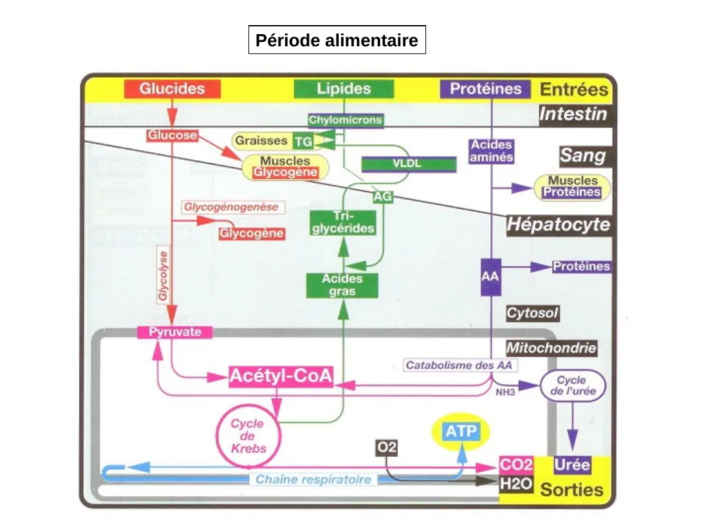
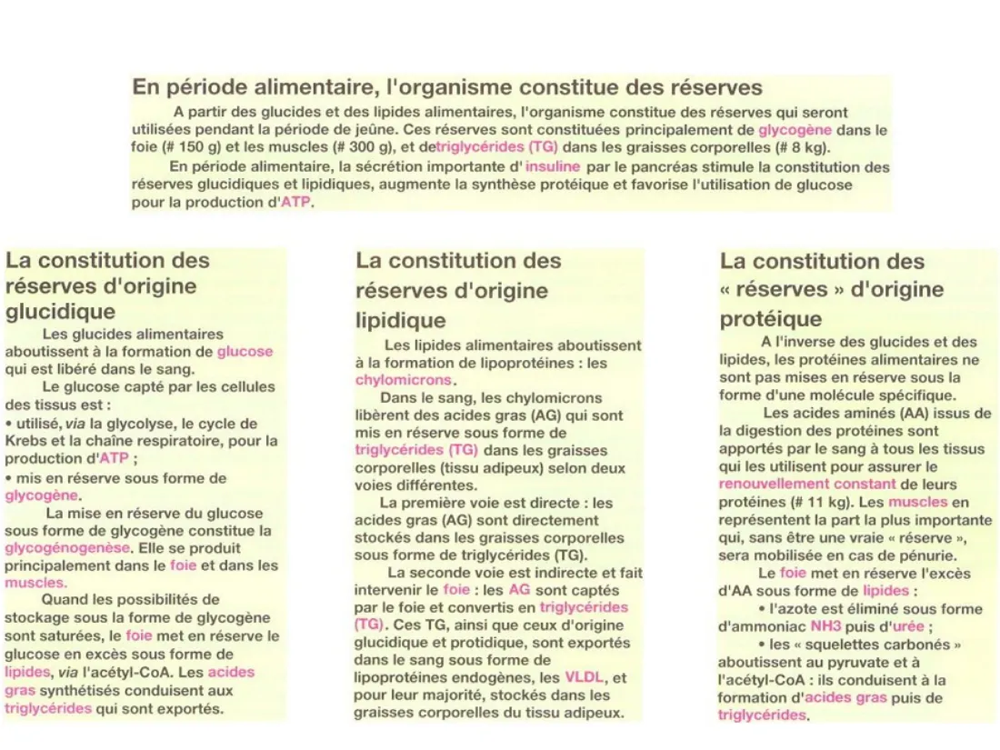
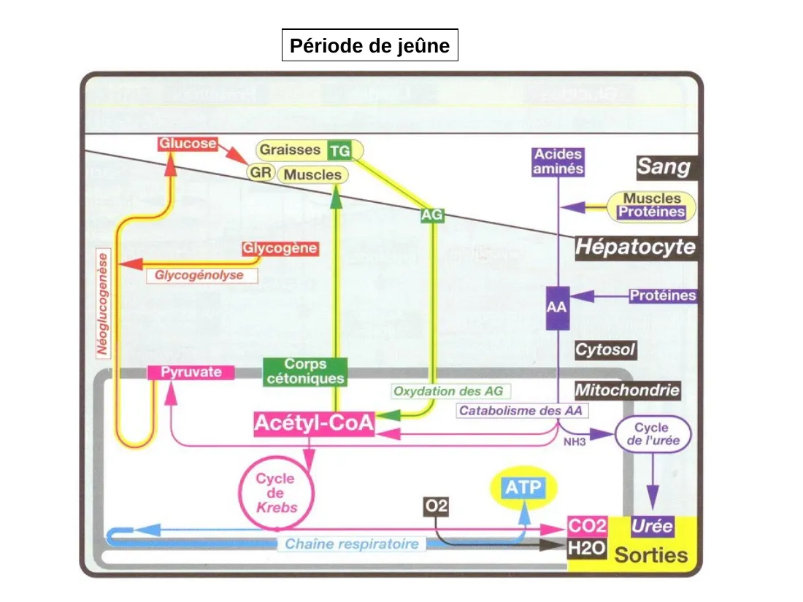
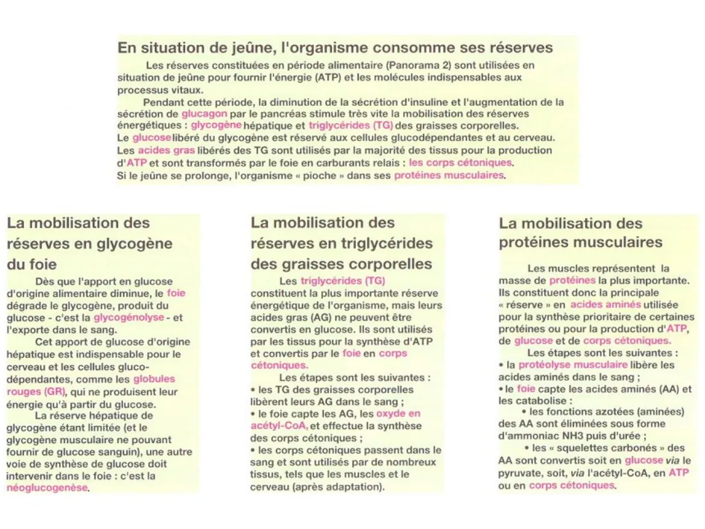
| Période alimentaire (post-prandiale) | Période de jeûne / effort | |
|---|---|---|
| Hormone | Insuline ↑ (cellules β) | Glucagon ↑ (cellules α), insuline ↓ ; adrénaline à l'effort |
| Glucides | Glucose → ATP (glycolyse, Krebs, chaîne respiratoire) et glycogénogenèse (foie + muscles) | Glycogénolyse hépatique (seul le foie relâche du glucose) puis néoglucogenèse |
| Lipides | Chylomicrons → AG stockés en TG (voie directe) ; le foie transforme l'excès de glucose en AG → TG exportés en VLDL | Lipolyse des TG → AG → β-oxydation dans le foie → corps cétoniques pour muscles et cerveau (après adaptation) |
| Protéines | Pas de vraie réserve ; renouvellement des protéines ; excès d'AA → NH₃ → urée, squelettes carbonés → AG → TG | Protéolyse musculaire → AA → foie → glucose (néoglucogenèse) ou corps cétoniques ; azote → urée |
Le cerveau (~120 g/j) et les globules rouges (pas de mitochondries) dépendent du glucose : l'hypoglycémie aiguë est vite dangereuse. À l'inverse, l'hyperglycémie glyque les protéines (fixation non enzymatique du glucose) et diminue leur fonction : c'est la base des lésions du diabète.
Ils n'ont pas de mitochondries : pas de cycle de Krebs, pas de β-oxydation, pas de phosphorylation oxydative. Seule la glycolyse anaérobie leur fournit de l'ATP (2 ATP par glucose), avec du lactate en sortie.
Après un repas, le glucose remplit d'abord le glycogène (foie ~150 g, muscles ~250-300 g ; réserves épuisées en ~24 h). Quand le glycogène est saturé et qu'on est sédentaire, le foie convertit l'excès via l'acétyl-CoA en acides gras puis en TG, exportés en VLDL vers le tissu adipeux.
Ils ne peuvent pas rester dans les hépatocytes : sinon on obtient un foie gras (stéatose), non fonctionnel. C'est pourquoi le foie les exporte sous forme de VLDL.
Après un repas riche en graisses (ex. frites + bière), le plasma devient trouble et blanc : c'est une émulsion de chylomicrons qui transportent les TG alimentaires. L'association sucre + graisse est la pire : le sucre est transformé en graisse et la graisse alimentaire arrive en même temps.
Seuls le foie (90 %), le rein (10 %) et un peu l'intestin possèdent la glucose-6-phosphatase : ce sont les seuls à pouvoir remettre du glucose libre dans le sang. Le glycogène musculaire ne sert qu'au muscle.
Parce que le foie est le seul organe qui libère du glucose (glycogénolyse + néoglucogenèse) entre les repas : sans foie fonctionnel, la glycémie de jeûne n'est plus maintenue.
Le cholestérol est surtout synthétisé par le foie à partir de l'acétyl-CoA (le réflexe du prof : une question de molécule → pense acétyl-CoA ; une question d'organe → pense foie). Il est indispensable : précurseur des hormones stéroïdes (cortisol, aldostérone, progestérone, testostérone, œstrogènes) et de la vitamine D. C'est son excès qui pose problème.
Le foie, à partir de l'acétyl-CoA (enzyme-clé : HMG-CoA réductase). Question posée en cours par le prof.
Sans sucres ni graisses, les acides aminés sont utilisés directement et on stocke peu de graisse : le régime fait fondre la masse grasse. Mais on suractive le cycle de l'urée : surcharge rénale.
La dégradation massive des acides aminés libère beaucoup d'azote (NH₃) que le foie transforme en urée via le cycle de l'urée ; le rein doit éliminer toute cette urée.
En jeûne, l'acétyl-CoA issu des AG déborde le cycle de Krebs : le foie le transforme en β-hydroxybutyrate, acétoacétate (et acétone). Ils passent dans le sang et nourrissent muscles, cœur puis cerveau. Ce sont des acides : légère acidose ; en excès (diabète décompensé, jeûne prolongé, alcool) → coma acido-cétonique.
L'acétyl-CoA ne peut pas redonner de pyruvate (la pyruvate déshydrogénase est irréversible). Seul le glycérol des TG peut entrer dans la néoglucogenèse. Les AG donnent donc de l'ATP ou des corps cétoniques, pas du glucose.
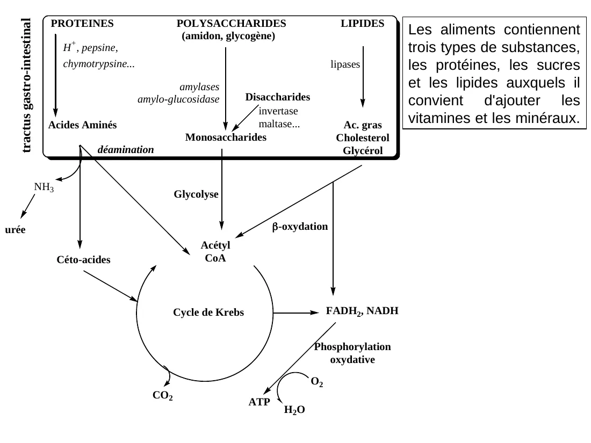
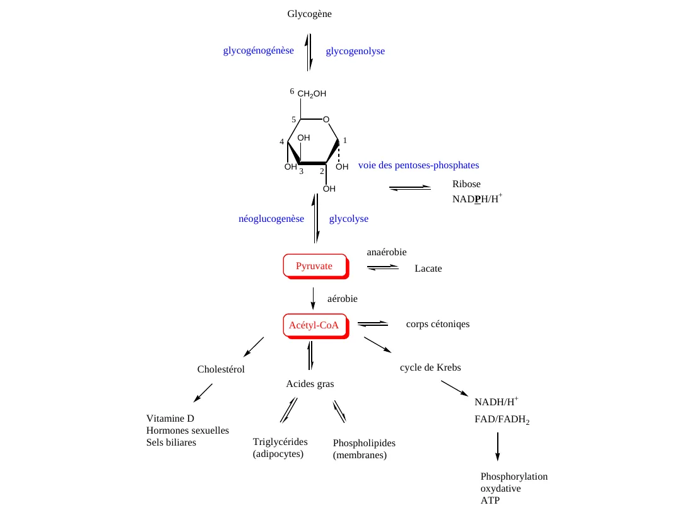
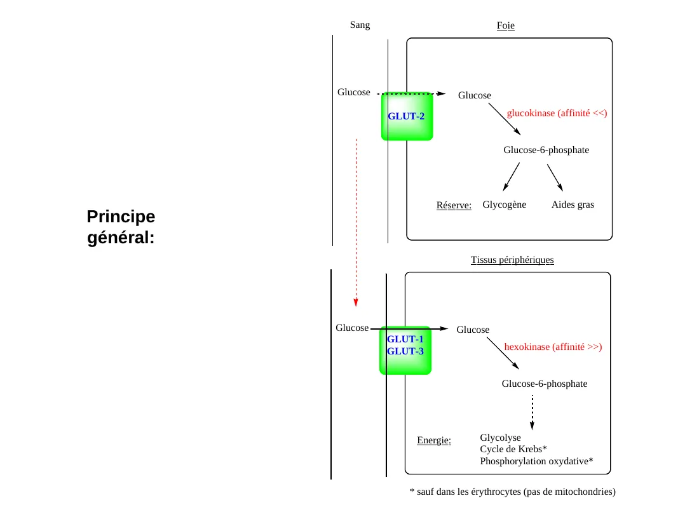
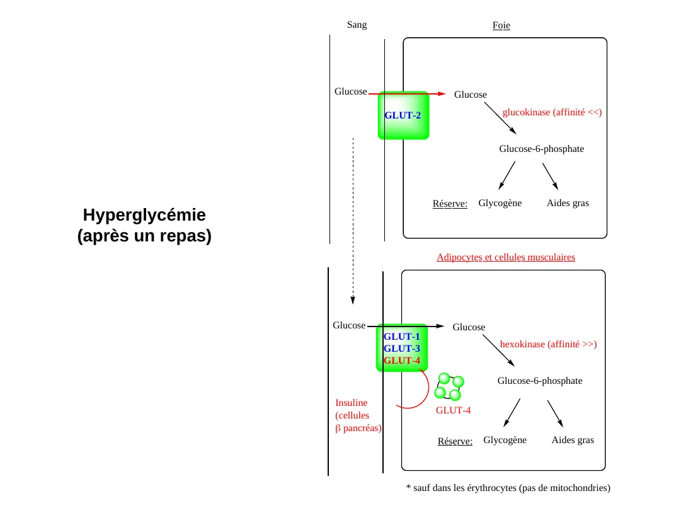
Métabolisme : ensemble des réactions chimiques catalysées par des enzymes. Anabolisme : synthèses, endergoniques, non spontanées, demandent de l'énergie. Catabolisme : dégradations, exergoniques, spontanées, produisent de l'énergie à stocker sous forme utilisable (ATP).
Le glucose entre par diffusion facilitée (selon le gradient). GLUT-1 et 3 : forte affinité, fonctionnent en permanence (cerveau, érythrocytes). GLUT-2 : faible affinité, « senseur » (foie, cellules β du pancréas, intestin). GLUT-4 : muscle et adipocyte, stocké dans des vésicules et envoyé à la membrane sous l'effet de l'insuline.
Il est immédiatement phosphorylé en glucose-6-phosphate (hexokinase), plus polaire, qui ne traverse plus la membrane. Cela maintient aussi une concentration intracellulaire basse de glucose libre, donc le gradient d'entrée.
Hexokinase (I) : tous les tissus, haute affinité, phosphoryle glucose, fructose, galactose → fourniture de base. Glucokinase (hexokinase IV) : foie et cellules β, faible affinité, glucose uniquement → elle ne travaille vraiment qu'après un repas : senseur et tampon (libération d'insuline, mise en réserve en glycogène).
À jeun : 0,7-0,9 g/L (3,8-5,1 mmol/L). 5 L de sang ne contiennent que ~5 g de glucose, contre ~400 g stockés en glycogène. Le corps consomme ~160 g de glucose par jour, dont ~120 g pour le cerveau.
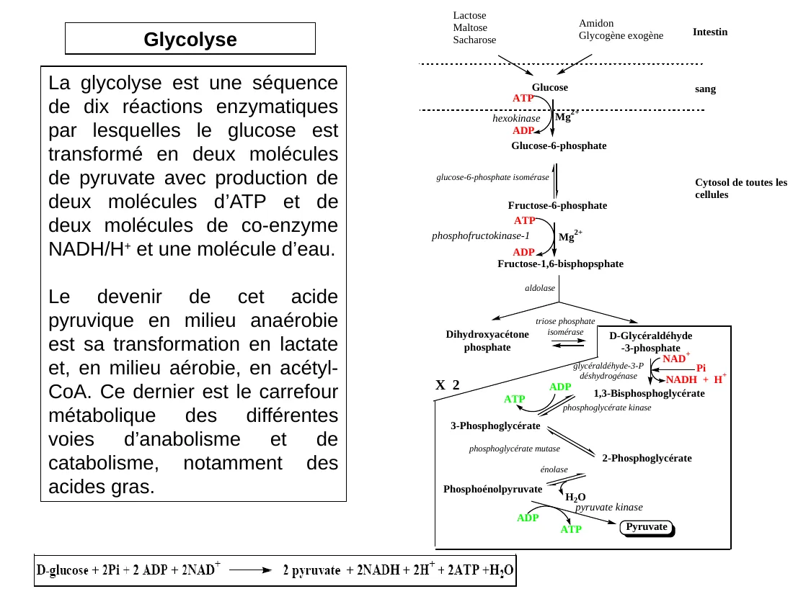
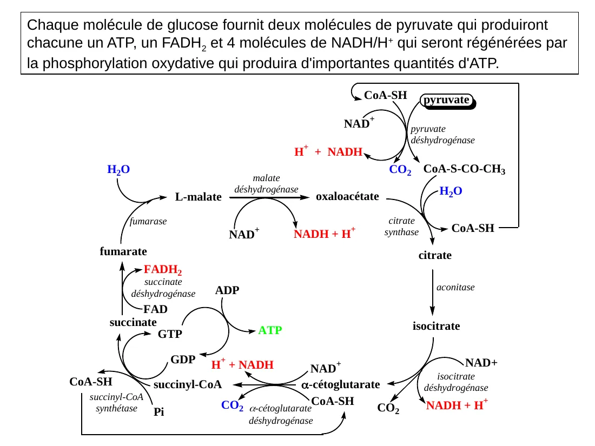
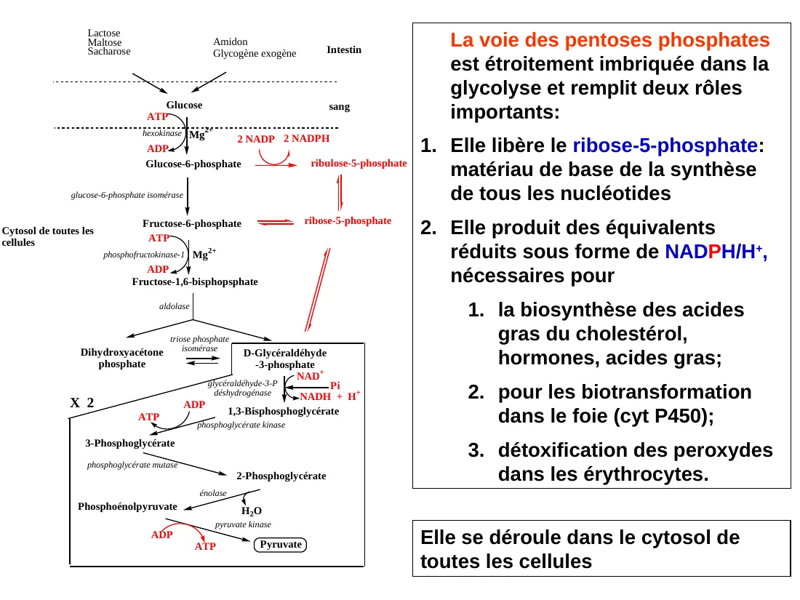
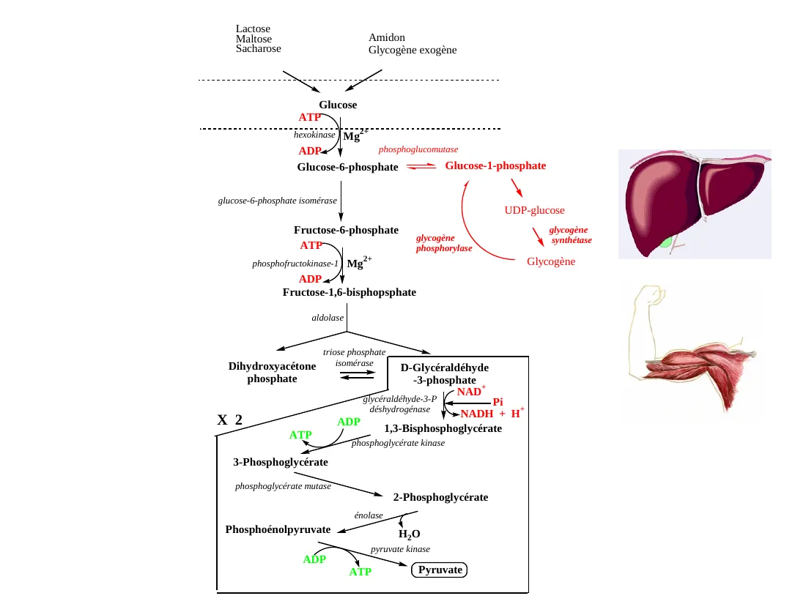
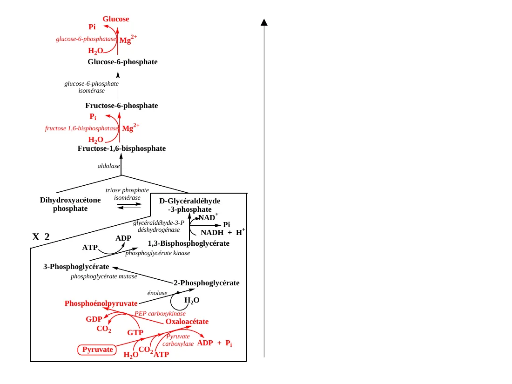
Dans le cytosol de toutes les cellules : glucose → 2 pyruvates + 2 ATP + 2 NADH. Trois étapes irréversibles et régulées : hexokinase, phosphofructokinase-1, pyruvate kinase. Le pyruvate donne du lactate (anaérobie) ou de l'acétyl-CoA (aérobie), carrefour des voies.
Freinent (énergie abondante) : ATP, NADH, citrate. Accélèrent (déficit) : ADP, AMP. C'est la régulation allostérique, à l'échelle de la cellule.
1) La cellule : régulation allostérique. 2) L'organe : le foie fournit du glucose aux autres et stocke après un repas. 3) L'organisme : hormones → récepteur → second messager AMPc → protéine kinase A → phosphorylation des enzymes-clés.
Glucagon (hypoglycémie, cellules α) : AMPc ↑ dans le foie → phosphorylation (PFK-2, pyruvate kinase) → glycolyse hépatique arrêtée, le glucose est gardé pour cerveau, GR et muscle. Insuline (hyperglycémie, cellules β) : AMPc ↓ dans foie, muscle et adipocytes → déphosphorylation → glycolyse et stockage.
Son rôle est d'élever la glycémie ; or seule une production hépatique de glucose peut le faire. L'insuline, elle, fait baisser la glycémie en agissant sur de nombreux tissus (foie, muscle, adipocytes).
En anaérobie (effort intense, érythrocytes), le pyruvate est réduit en lactate par la LDH, ce qui régénère le NAD⁺. Le lactate part au foie, redevient pyruvate puis glucose (néoglucogenèse) : c'est le cycle de Cori. LDH-5 (muscle) : pyruvate → lactate ; LDH-1 (cœur) : lactate → pyruvate.
La LDH est intracellulaire : elle monte dans le sang quand des cellules sont détruites (hémolyse, infarctus, atteinte hépatique ou musculaire, cancers à renouvellement rapide comme les lymphomes). Attention au faux positif d'un tube hémolysé.
Dans la mitochondrie, chaque pyruvate → acétyl-CoA (pyruvate déshydrogénase, irréversible) → cycle : par glucose, 6 CO₂, 4 ATP (2 glycolyse + 2 GTP), 2 FADH₂ et 10 NADH, à réoxyder par la chaîne respiratoire.
Dans toutes les cellules : 1) ribose-5-phosphate pour les nucléotides ; 2) NADPH/H⁺ pour les biosynthèses réductrices (AG, cholestérol, stéroïdes : foie, tissu adipeux, glande mammaire, surrénales, gonades) et la protection : réduction du glutathion dans les GR, hydroxylations de détoxification dans le foie.
Le GR n'a plus de noyau (pas besoin de ribose) mais il est exposé à l'oxygène : le NADPH qu'elle produit sert à régénérer le glutathion réduit, qui protège l'hémoglobine et la membrane contre l'oxydation (repris au chapitre 4).
Polymère ramifié de glucose (α-1→4, branches α-1→6 tous les ~15 résidus). Synthèse via l'UDP-glucose par la glycogène synthase ; dégradation par la glycogène phosphorylase. Glucagon (foie) et adrénaline (muscle) : AMPc ↑ → phosphorylase activée, synthase inhibée → glycémie ↑. Insuline : l'inverse. Dans le muscle aussi : AMP et Ca²⁺-calmoduline activent la phosphorylase.
Synthèse de glucose à partir du lactate, du glycérol et des acides aminés (alanine), après ~18 h de jeûne. Foie (90 %), rein, intestin. Elle contourne les 3 étapes irréversibles de la glycolyse avec 4 enzymes : pyruvate carboxylase, PEP carboxykinase, fructose-1,6-bisphosphatase, glucose-6-phosphatase. La pyruvate carboxylase ne travaille qu'en présence d'acétyl-CoA (assez d'énergie). Le glucagon l'active.
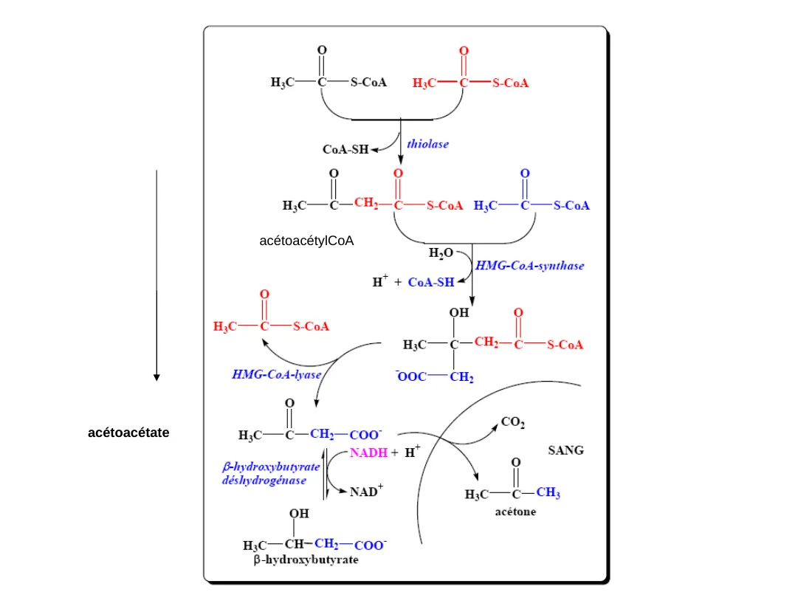
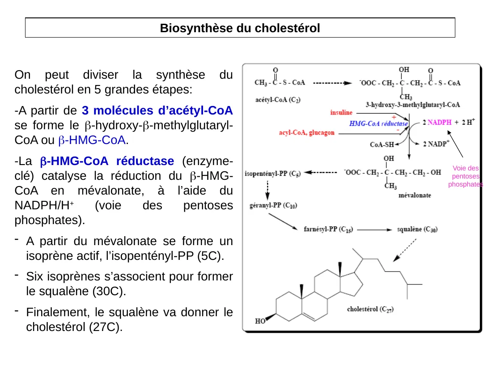
AG saturés et insaturés (oméga-3 : EPA, DHA ; acide arachidonique C20:4), TG, phospholipides, isoprénoïdes, cholestérol. Insolubles dans le plasma : transportés liés à l'albumine (AG) ou dans des lipoprotéines (chylomicrons, VLDL, LDL, HDL, par densité croissante). Détails au chapitre 4.
Dans le duodénum, les sels biliaires (dérivés amphiphiles du cholestérol) émulsionnent les graisses ; les lipases pancréatiques hydrolysent les TG (positions 1 et 3) en 2-monoacylglycérol + AG ; micelles absorbées par l'intestin.
Activation en acyl-CoA dans le cytosol (coût 2 ATP) → passage dans la mitochondrie grâce à la carnitine → coupure par blocs de 2 C en acétyl-CoA. Valeurs du cours : un tour = 1 FADH₂ + 1 NADH + 1 acétyl-CoA ≈ 17 ATP ; palmitate (C16) ≈ 129 ATP. Pas de β-oxydation dans les GR.
Dans le cytosol (surtout le foie) à partir de l'acétyl-CoA sorti de la mitochondrie sous forme de citrate. Enzyme-clé : acétyl-CoA carboxylase (→ malonyl-CoA), activée par le citrate et l'insuline, inhibée par l'AMP, l'adrénaline et le glucagon. Produit : palmitate (C16), avec du NADPH.
Synthèse à partir du glycérol-3-phosphate (issu du DHAP de la glycolyse) : il faut du glucose pour stocker les graisses. Lipolyse dans l'adipocyte par la lipase hormono-sensible, activée par adrénaline et glucagon (AMPc), inhibée par l'insuline. Réserves ≈ 12 % du poids.
3 acétyl-CoA → HMG-CoA → (HMG-CoA réductase, enzyme-clé, NADPH) mévalonate → isoprènes → squalène → cholestérol (27 C). Rétro-inhibée par le mévalonate et le cholestérol ; inhibée par le glucagon, stimulée par l'insuline. Estérifié pour être stocké (ACAT dans les cellules, LCAT dans le sang). Trois rôles : membranes, acides biliaires, hormones stéroïdes.
Les statines, inhibiteurs de la HMG-CoA réductase (lien avec le séminaire dyslipidémies et athérosclérose).
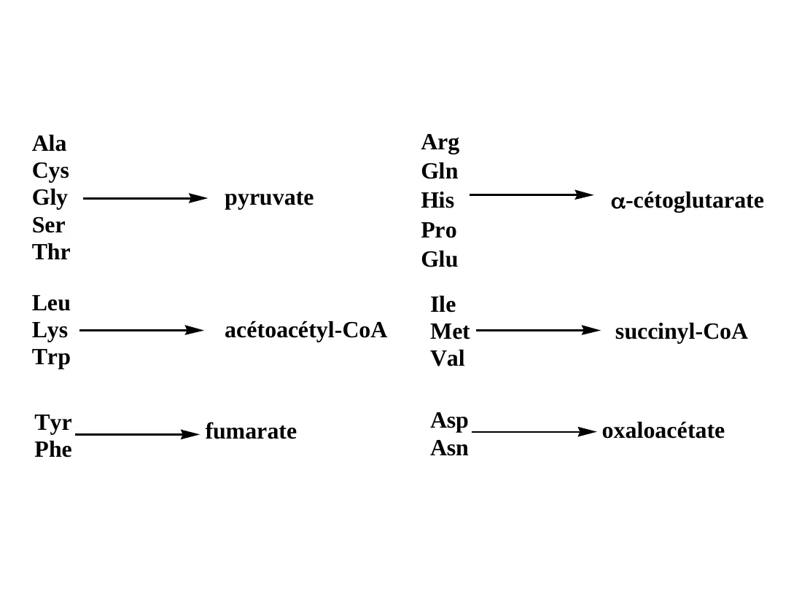
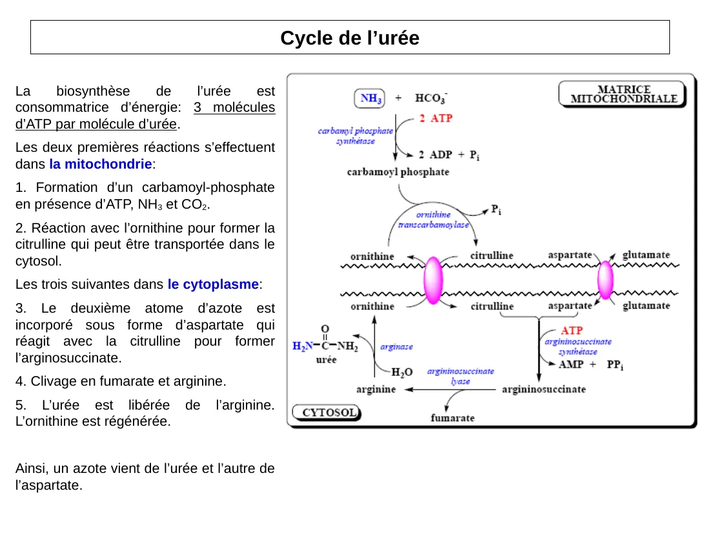
20 AA dont 8 essentiels. Pas de stock comme le glycogène ou les TG : les seules « réserves » sont les protéines, surtout musculaires, mobilisées en cas de jeûne. Les AA circulent librement dans le plasma ; ~400 g de protéines synthétisés par jour.
Transfert du groupe aminé d'un AA vers un α-cétoacide, avec le phosphate de pyridoxal (vitamine B6). ALAT (alanine ↔ pyruvate, surtout cytoplasmique) et ASAT (aspartate ↔ oxaloacétate, surtout mitochondriale) : marqueurs des lésions hépatiques.
L'ALAT est surtout cytoplasmique : sa hausse seule indique une lésion hépatocytaire où les mitochondries sont encore épargnées. Si l'ASAT (mitochondriale) monte aussi, la lésion est plus grave.
Le NH₃ est très toxique : la périphérie l'envoie au foie sous forme de glutamine (AA le plus abondant du plasma). Le muscle exporte de l'alanine vers le foie pour la néoglucogenèse (2e AA le plus abondant). Le glutamate est le pivot (glutamate déshydrogénase).
Uniquement dans le foie ; urée éliminée par le rein. Coût : 3 ATP par urée. Mitochondrie : NH₃ + CO₂ → carbamoyl-phosphate, + ornithine → citrulline. Cytosol : + aspartate → argininosuccinate → fumarate + arginine → urée + ornithine.
Décarboxylation d'AA → amines actives, dégradées par les MAO : GABA (du glutamate), histamine (de l'histidine), dopamine (de la L-DOPA) puis noradrénaline et adrénaline, sérotonine (du 5-hydroxytryptophane) puis mélatonine. Revues en détail aux chapitres 2.9 et 2.10, et dans la liste des molécules à dessiner.
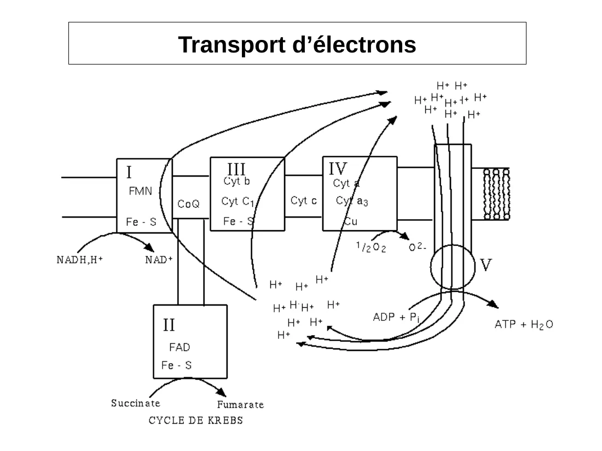
Les NADH et FADH₂ de Krebs et de la β-oxydation cèdent leurs électrons à 4 complexes de la membrane interne mitochondriale (I NADH-ubiquinone réductase, II succinate-ubiquinone réductase, III ubiquinone-cytochrome c réductase, IV cytochrome oxydase), avec le coenzyme Q et le cytochrome c comme navettes. L'accepteur final est l'O₂. Le gradient de protons fait tourner l'ATP synthase (complexe V).
CO (combustion incomplète, inodore), H₂S (odeur → intoxication rare), cyanures (HCN, KCN ; incendies de plastiques) bloquent le fer de la cytochrome oxydase → plus d'ATP → mort cellulaire rapide. Traitement du cyanure : thiosulfate de sodium.
Relevé dans ta transcription du cours de JMD (chapitre 1) et dans le cours de présentation de RS (21/09/2026), qui fait l'examen.
Le chapitre 1 a donné peu de questions directes : les questions marquées « reformulée » reprennent un point sur lequel le prof a insisté. Rappel du format (RS) : « sur la base d'un schéma, expliquez-moi » ; un texte sans schéma vaut zéro.
Le chapitre 1 sert surtout de socle : sa question type est le grand schéma intégré. Entraîne-toi sur papier, puis ouvre le corrigé.
Sur la base d'un schéma, comparez le devenir des glucides, lipides et protéines en période alimentaire et en période de jeûne.
Un patient diabétique de type 1 arrête son insuline, a une haleine qui sent le vernis à ongles et devient somnolent. Expliquez.